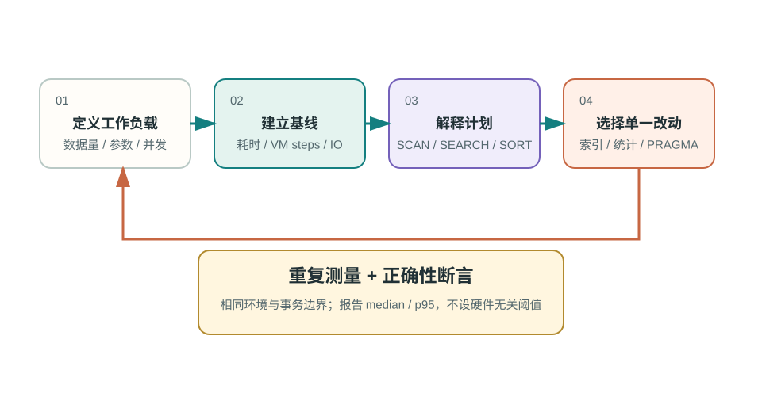
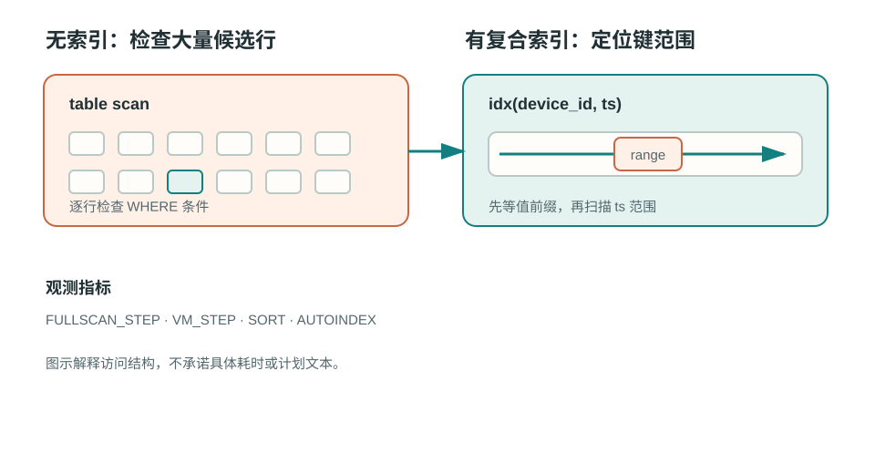
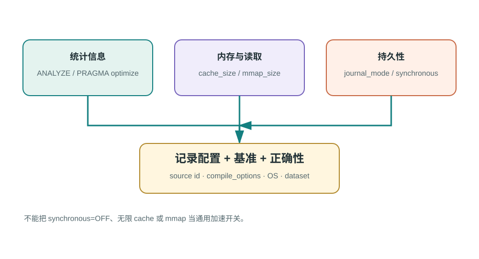

SQLite 性能诊断：执行计划、语句计数器与可重复基准
性能优化不是不断尝试 PRAGMA。先固定工作负载，再读 EXPLAIN QUERY PLAN、sqlite3_stmt_status 和统计信息；每次只改变一个因素，最终用相同数据、参数和环境重复测量，并验证查询结果未变。
阅读提示：可轻点图解打开独立矢量原图；窄屏图解支持横向查看细节。
1. 性能优化首先要定义“快”是什么
同一个数据库系统可能同时承担点查、范围扫描、批量写入、全文检索和多连接并发。优化目标不同，测量指标也不同：单次查询延迟、吞吐量、尾延迟、内存占用、写放大、锁等待和持久性都不是同一个数字。若没有固定工作负载，所谓“加速 10 倍”很可能只是换了数据量、缓存状态或事务边界。
可靠的基线至少记录：SQL 文本与绑定参数、数据规模和分布、索引集合、SQLite 版本/source id、编译选项、操作系统与文件系统、journal_mode、synchronous、page_size、cache_size、冷/热缓存状态，以及事务是单条提交还是批量提交。先用同一条查询重复运行，再决定是否需要改变索引或配置。

2. EXPLAIN QUERY PLAN 告诉你访问路径，不告诉你毫秒数
EXPLAIN QUERY PLAN 是快速观察 Planner 决策的入口。你可以看到 SCAN、SEARCH、索引名称、covering index、临时 B-tree 等提示，帮助判断查询是扫描表、走索引还是额外排序。CLI 的 .eqp on 可以在执行查询前自动显示计划。
但 EQP 的文本格式和节点组织是诊断输出，不是稳定应用 API。不同 SQLite 版本、统计信息、数据分布和查询改写可能改变计划；不要在生产代码中解析“SEARCH t USING INDEX”这样的字符串，也不要把一个版本上的计划截图当成跨版本保证。应在目标版本与目标数据集上观察计划，并结合语句计数器与实际耗时判断。
EXPLAIN QUERY PLAN
SELECT count(*)
FROM event
WHERE device_id = 42
AND ts >= 100000
AND ts < 300000;
-- CLI 交互式诊断
.eqp on
.timer on
SELECT ...;官方 EXPLAIN QUERY PLAN 文档说明了常见输出含义；输出结构会随版本演进，适合人阅读与调试，而不是长期绑定的机器接口。
3. 用 sqlite3_stmt_status 量化语句做了多少工作
只看 wall-clock time 很难分辨查询慢是因为扫描行太多、排序、自动索引构建，还是机器负载变化。SQLite 提供 sqlite3_stmt_status()，为单条 prepared statement 维护多个工作计数器。常用指标包括：
| 计数器 | 观察的问题 |
|---|---|
FULLSCAN_STEP | 全表扫描走过多少步 |
SORT | 发生排序操作的次数 |
AUTOINDEX | 自动索引构建插入的行数 |
VM_STEP | VDBE 执行步数，粗略反映虚拟机工作量 |
REPREPARE | 语句自动重新准备的次数 |
这些计数器是工作量信号，不等于实际磁盘 I/O 或 CPU cycles。若需要循环级 scanstatus 数据，需确认 SQLite 构建启用了相应编译选项；不要假设所有发行版都提供同样的诊断接口。

4. 统计信息会影响 Planner，PRAGMA optimize 是维护入口
Planner 需要估计某个索引能筛掉多少行、多个约束组合后还有多少候选项。ANALYZE 收集表与索引统计信息并写入 sqlite_stat* 表，帮助优化器选择访问路径。没有统计信息时，Planner 仍然可以工作，但面对复杂查询和偏斜数据分布时，计划质量可能受影响。
当前官方推荐大多数应用使用 PRAGMA optimize 作为日常入口：短连接在关闭前运行；长连接可在打开时运行 PRAGMA optimize=0x10002，之后周期性运行 PRAGMA optimize；schema 发生变化，尤其新建索引后，也应运行 optimize。它通常是 no-op，只在需要时执行有限的 ANALYZE 工作。自 SQLite 3.46.0 起，optimize 会自动限制 ANALYZE 的工作范围以便快速完成。
注意 ANALYZE 可能改变后续查询计划，而且统计信息不会随着每次数据变动实时重算。若应用要求所有部署环境都固定使用同一计划，应明确评估固定统计数据策略，而不是在生产环境里无条件周期性地重跑完整 ANALYZE。
5. PRAGMA 调优必须同时考虑资源与持久性
cache_size 是每个打开数据库文件的建议页缓存上限。正数表示页数，负数表示大约 KiB；默认建议值为 -2000，即约 2,048,000 字节。设置为 2000 不代表固定 2 MB，因为正数的单位是页，页大小可能不同。应用定义的 page cache 也可以采用自己的解释。
page_size 的合法值是 512 到 65536 之间的 2 的幂。修改设置不会立即重排现有数据库；通常在数据库首次创建，或非 WAL 模式下下一次 VACUUM 时生效。mmap_size 受编译上限、启动配置、VFS 和地址空间限制，也可能因同一连接上存在活动语句而暂时不生效。

最需要谨慎的是 synchronous：WAL 模式下 NORMAL 仍保持一致性，但系统崩溃或断电时可能丢失最近提交事务的持久性；FULL 在每次提交后额外同步 WAL，提供更强持久性；OFF 在操作系统崩溃或断电时可能导致数据库损坏。不能把 synchronous=OFF 当作生产加速开关，而不说明数据风险。
6. 建立可复现的 benchmark，而不是写死一个加速倍数
仓库中的 examples/25_stmt_status.c 创建一批确定性数据，在建索引前后运行相同查询，比较 FULLSCAN_STEP 与 VM_STEP。它验证的是访问工作量发生变化，而不是保证某台机器一定快多少毫秒。examples/25_benchmark.py 进一步重复执行热缓存查询，报告中位数和 p95，并检查两种方案返回的行数一致。
cc -std=c11 -Wall -Wextra -Werror -O2 \
examples/25_stmt_status.c -lsqlite3 -o /tmp/25-status
/tmp/25-status
python examples/25_benchmark.py
# 输出包含 SQLite version/source id、数据规模、
// warm-cache median / p95 和查询结果断言SQLite 上游的 test/speedtest1.c 是专门的性能测试程序，适合比较版本和构建配置；它并不等同于你的应用工作负载。每次对比应固定 SQL、数据、参数、事务大小、缓存状态和编译选项，记录多次运行分布，而不是只挑最快的一次。
一次完整的性能诊断报告至少回答
- 慢的是哪条语句，目标是延迟还是吞吐？
- 执行计划与 FULLSCAN_STEP、SORT、VM_STEP 显示了什么？
- ANALYZE/PRAGMA optimize 是否适合当前连接生命周期？
- 修改索引或 PRAGMA 后，结果是否逐行一致？
- 对比环境是否具有相同 SQLite source id、数据、参数和缓存状态？
自测：为什么不能把 EXPLAIN QUERY PLAN 的字符串作为自动化性能断言？
因为计划文本是面向诊断的版本相关输出；数据分布、统计信息和 SQLite 版本变化都可能改变计划。自动化测试更应断言查询结果和可量化的工作指标，而不是依赖某段固定字符串。
官方资料与版本边界
涉及源码内部符号时，以 SQLite 3.54.1 源码快照为定位基准；公开文档用于解释稳定接口和语义。内部函数、行号和构建配置会随版本变化。
- EXPLAIN QUERY PLAN · SQLite 官方文档或版本化源码
- Prepared Statement Status · SQLite 官方文档或版本化源码
- ANALYZE and PRAGMA optimize · SQLite 官方文档或版本化源码
- PRAGMA statements · SQLite 官方文档或版本化源码
- SQLite speedtest1 source · SQLite 官方文档或版本化源码
- SQLite 3.54.1 release history · SQLite 官方文档或版本化源码